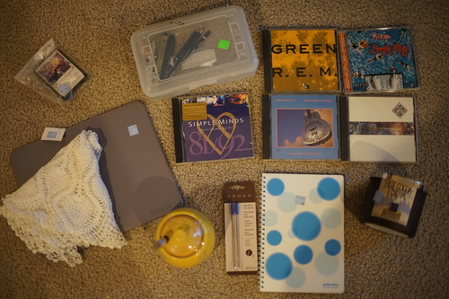
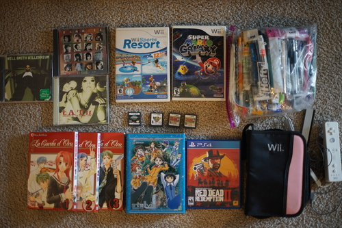
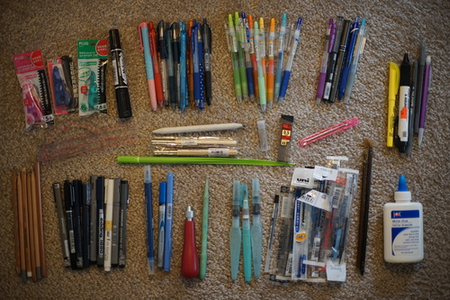

At least I think her birthday is today... She never had a box opening and I didn't take photos so I'm going off a line I wrote in my spiral ring notebook. Either way, today is her celebration!!

She's been with me 12 years now! I can't believe I thought she was old when I got her back then because she's been with me 4x longer than her (head's) age at the time.

here's more hina hanami photos! the arbitrarium was pretty empty this day except for a dude who walked by me twice. sorry for all the stray hairs but theres no way to control curly wigs in the wind


im so nervous about losing one of her fingers that i checked them like 3 times after getting home. if i lost one id be out all night looking for it! these hands were too d*rn expensive to lose a finger.
just for funsies. no voss cards were included
inside are Rembrandt Lyra 2B, 4B, 6B, 2 halves of a prismacolor eraser, an unused prismacolor kneadable eraser, smudgy stick, micron 005, pentel felt tip marker. ill probably redonate the case.
big fan of standing in the place that i live
there were 2 more joe jackson CDs but not the one i was looking for. pls...
I think my pen's mechanism may be broken now that i have a refill. i cant get it to pop out.
ive been asking for this candle for christmas ever since my friend got one and i couldnt stop sniffing it. a total must buy!
and another... some weeaboo must have given up to become a normie this week. i found p4a and catherine immediately but i overheard a girl ask her mom for the fairytail complete blurays for $.95 and went back and found more. at first i was mad i didnt snag fairytale but i dont think i'd enjoy it even if i did watch it so i hope she enjoys it!! she deserves it more than i do
Never heard of it.
Heard of it but I haven't seen it!
My favorite find of the day! Was it Laura Bailey in this dub? For some reason I can hear Tohru Honda in my head.
Ryan's.
there was a community garage sale that i've been excited for! i looooove garage/yard sales much more than thrift stores because i can haggle! you basically cant haggle anywhere in the US outside of these anymore for all you foreigners reading this. its really rude :P
the number of cents that were shorted (from 25 cents) are equal to the number of tracks that cant be ripped
i'm so happy every time i find a tatu CD
i do already have this one but its condition is "destroyed"
cant wait to see how bad this is
im going to have a game club. it'll be like a book club. for games. ryan already has a copy so you can join us if youd like
the college student was sad he wasnt getting much for it because he spent $60 on it. sorry dude AAA games do not often hold value
shout out to the mom who sold all her son's stuff the moment he left home. i hope my mom never does this to me. The wii games, DS games, wiimote and sensor bar were all at her booth. I found a DS case with a broken DS lite inside along with a DS guitar hero attachment and a bunch of games for $40. most of the games were garbage like barbie and zhu zhu pets and a couple GB/GBA sports games. I found 2 copies of phantom hourglass in there and asked the mom if she would sell them separately. she said $1 for both, so i grabbed them and thought "well better look up the metroid game" and good thing i did! i grabbed that and puzzle de harvest moon even though i have no hope for harvest moon. I went back a bit later and she had a bucket of wii out. again, most the games were kids games but galaxy was in there so i grabbed that too along with sports resort and an extra sensor bar and wiimote.
i chose to buy the bag of assorted pens for $2 because I saw there were 3 water brushes in there and a lot of japanese pens. there were a few uni signo pens and refills and a pile of pilot juice pens. my favorite of these is the little twin stars signo! how cute! I'm gonna use this one a lot! there were a few pens in there that had been fully used up which probably should have been tossed but there were also refills for some of them too. looks like i need to look out for a whiper mr because i have 3 refills for it now...
im having a lot of fun with the pens ive bought. and the pens i dont want i will accidentally lose in a drawer at work!
i admit i am going nuts right now but i live in a town where people donate or throw away all their belongings in spring and leave. it is an amazing time to find things. soon the town will be empty and donations will be back at a snail's pace. but that time is nice too because i love how quiet summer is here.